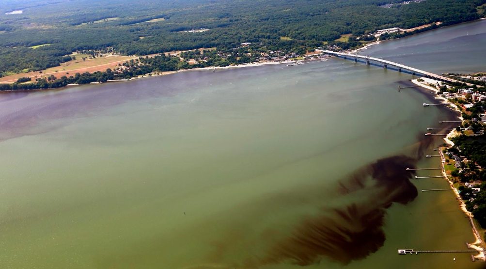

Research

Some phytoplankton species are considered harmful because they can adversely affect marine ecosystems or human health. Toxic phytoplankton are species capable of producing toxins, which may directly affect marine organisms or accumulate in their tissues and be transferred through food webs. Humans can subsequently be exposed through the consumption of contaminated seafood. These effects can intensify during harmful algal blooms (HABs), when phytoplankton abundance increases substantially above its usual level, sometimes causing visible water discoloration (commonly referred to as “red tides”; see picture).
HAB dynamics are influenced by biotic factors, including grazing and competition, and abiotic factors such as temperature, salinity, and seawater pH. Climate change may modify the geographical distribution of harmful algal species and influence their toxin production, potentially promoting the emergence of blooms in previously unaffected regions or intensifying recurrent events. Beyond their implications for human health, HABs can directly affect the health of marine animals. These organisms, which include primary consumers such as filter-feeding bivalves, detritivores such as some shrimp species, and herbivorous and carnivorous fishes, play key ecological roles and support economically important fisheries and aquaculture industries.
In this context, my research is structured around three interconnected themes: phytoplankton physiology, the environmental dynamics of phytoplankton populations, and the fate and effects of algal toxins.
Modeling shellfish toxicity in the Gulf of Maine
In response to public health concerns associated with shellfish poisoning, authorities and agencies have implemented monitoring and management measures to prevent contaminated shellfish from reaching the market. Monitoring involves collecting shellfish from stations along a coastline, typically weekly or every two weeks, and testing soft tissue extracts for toxicity to guide regulatory decisions. When toxicity exceeds regulatory limits, shellfish harvesting, including recreational harvesting, and associated activities such as distribution and sales are prohibited for periods ranging from days to months. However, these monitoring methods are labor- and time-intensive, limiting the frequency and spatial coverage of sampling.
In this study, conducted at WHOI, we aimed to complement routine shellfish toxicity monitoring in Maine by modeling coastal shellfish toxicity using a one-compartment model. The model was driven by toxic Alexandrium catenella (producer of toxins responsible for paralytic shellfish poisoning) cell concentrations measured automatically by robotic Environmental Sample Processors (ESPs; see photographs) deployed at several coastal locations in the Gulf of Maine.
This ESP-driven modeling approach shows promise for improving monitoring capacity in remote or undersampled coastal areas by providing toxicity estimates at higher temporal resolution to inform decision-making. Further details are available in the published study.
We also coupled A. catenella concentrations simulated by a physical–biological model with the one-compartment model described above to predict coastal shellfish toxicity, achieving an R2 of 0.40. Further information will be available soon.
Ecophysiology of Dinophysis and its food chain
Species of the genus Dinophysis can produce two groups of lipophilic toxins: okadaic acid and dinophysistoxins, which are responsible for diarrheic shellfish poisoning, and pectenotoxins.
Toxic species of Dinophysis are kleptoplastidic, meaning that they retain chloroplasts acquired from their prey and use them for photosynthesis. In culture, Dinophysis is fed the ciliate Mesodinium rubrum. The latter is also kleptoplastidic and acquires its plastids from a cryptophyte, Teleaulax amphioxeia. Growing Dinophysis in the laboratory therefore involves a three-step culture method comprising these three organisms.
In a study conducted at Ifremer (Nantes, France), we aimed to determine the combined effects of three environmental factors on the cryptophyte Teleaulax amphioxeia. We examined growth, pigment synthesis, and photosynthetic parameters measured by fluorimetry. We monitored cultures using a factorial experimental design in a culture chamber containing 17 individually controlled photobioreactors (see photograph). In a related experiment, we tested the effects of abrupt salinity changes on the growth, toxin and osmolyte production, and metabolome of Dinophysis. In France, this dinoflagellate commonly occurs in coastal environments subject to substantial salinity fluctuations, such as bays and estuaries. Further details on French isolates of Dinophysis are available in this study.
Within the conditions tested, T. amphioxeia exhibited optimal growth and photosynthetic performance under warmer, more acidic conditions and higher light intensity than those currently typical of the northeastern Atlantic, suggesting that future environmental conditions could favor this cryptophyte. We also showed that the growth of its predator, Mesodinium rubrum, was enhanced at higher T. amphioxeia concentrations. Finally, Dinophysis tolerated salinity fluctuations, which induced the production of known osmolytes, such as proline, and other unidentified metabolites.
These studies contribute to a better understanding of this complex food chain and the physiological interactions that influence toxic bloom dynamics. Further details are available in our studies on Teleaulax amphioxeia and Mesodinium rubrum and salinity stress in Dinophysis.